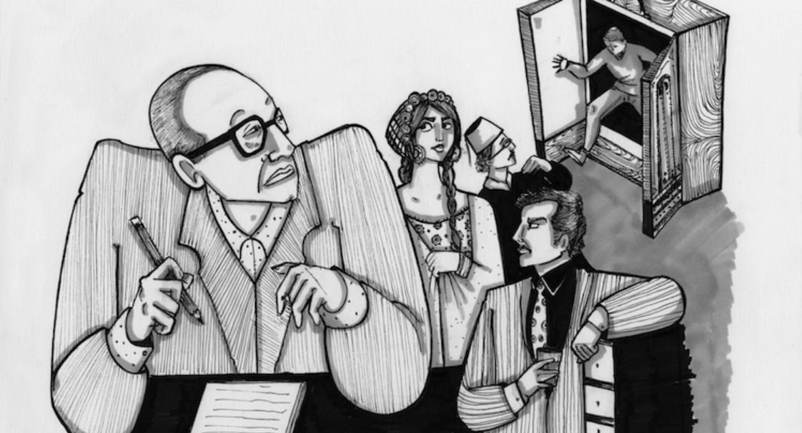

تصميم الرسم التوضيحي - ديمة نشاوي
الكل يعلن رأيه، حتى ما يتهجم به على الخالق، ولكنه لا يسعه إلا أن يكتم ما يضطرم في أعماق نفسه، وسيظل سراً مرعباً يتهدده، فهو كالمطارد، أو كالغريب، من الذي قسم البشر إلى طبيعي وشاذ؟ وكيف تكون الخصم والحكم في آن؟ ولِمَ نهزأ كثيراً بالتعساء؟
نجيب محفوظ، السكرية؛ (1957)
في الثاني والعشرين من شهر أيلول من عام 2017، أقامت فرقة مشروع ليلى اللبنانية حفلاً موسيقياً في أحد المراكز التجارية في القاهرة. ومن ضمن ما تمت مشاركته على وسائل التواصل الاجتماعي من توثيق للحفل، كانت هناك بعض الصور والفيديوهات لشباب يرفعون علم الرينبو (قوس قزح)، أحد رموز التنوع والاختلاف الجنسي. وخلال الأيام القليلة اللاحقة تصاعدت وتيرة حملة أمنية على مجتمع الميم في مصر.
ورغم أن التنكيل الأمني لم يكن أمراً جديداً على أفراد هذا المجتمع، إلا أن حِدّة السعار الإعلامي، وحالة التحريض الواسعة التي صاحبت واقعة رفع العلم، والعدد النهائي للمقبوض عليهم (75 شخصاً) والماثلين أمام المحاكم كان غير مسبوق. لم يحدث شيء مشابه منذ واقعة الكوين بوت الشهيرة في عام 2001، والتي أسفرت عن القبض على 52 شخصاً من مرتادي الملهي الليلي -الذي سُمّيت القضية باسمه- ومحاكمتهم بتهم مختلفة، أشهرها «اعتياد ممارسة الفجور» و«ازدراء الأديان».
ورغم فداحة الحادثتين وما صاحبهما من تحريض أمني ومجتمعي ضد متنوّعي الهوية الجنسية في مصر، إلا أنهما لم تسفرا عن أي تحوّل (تغيير) حقيقي أو ملموس في تعامل الدولة والمجتمع مع مجموعات المثليين والمثليات والمتحولين والمتحولات، بل تمت إعادة إنتاج الخطاب نفسه، الذي استُخدم لتبرير التنكيل والعنف.
بالأخص، فإن مخاوفي مُركّزة على غياب إطار [مفاهيمي] في الوقت الحالي، الذي يمكن من خلاله البحث عن أصل أو تطور الهوية الفردية المثلية، دون أن يكون إطارٌ كهذا مبنياً، بشكل ضمني، على مشروع أو هوس غربي متجاوز للفرد، يتمثل في محو تلك الهوية.
إيف كوسوفسكي سدجويك، عن معرفة الخزانة؛ (1990)
إيف كوسوفسكي سدجويك (1950-2009) هي إحدى مؤسِسات ورائدات النظرية الكويرية في النقد والتحليل. تقوم النظرية الكويرية على عدد من الروافد النقدية والفلسفية داخل الأكاديمية الغربية، وقد ظهرت منذ منتصف السبعينات متأثرة بفلسفة ما بعد البنيوية والتفكيكية، بالتوازي مع الحركات النسوية وتياراتها الفكرية المختلفة، وحركات الطلبة والتي تضمنت حراكاً وتنظيراً حول الهوية المثلية وحقوق المثليين.
وخلال تلك المسيرة الأكاديمية، كتبت أيف كوسوفسكي سدجويك كتابها، عن معرفة الخزانة (1990)، وهو من أهم ما كتبت، ويشكّل امتداداً لذلك المشروع النقدي حول تطور خطاب فكري/فلسفي في الغرب منذ القرن الثامن عشر، ظل محوره محو أو إبادة الهوية المثلية، على اختلاف تجلياتها وطرق تعريفها أو توصيفها.
وتجدر الإشارة إلى أن السياق التاريخي لكتابة عن معرفة الخزانة هو أحد أسوأ الكوارث الصحية التي اجتاحت العالم المعاصر، ألا وهو الانتشار الوبائي لمتلازمة نقص المناعة في الولايات المتحدة في مطلع الثمانينات. لم يسبق أن تمت مناقشة مرض في الجمعية العامة للأمم المتحدة حتى ظهور نقص المناعة المكتسب. لم يُعرف سبب المرض، ولم يستنبط متخصصو الفيروسات تسميةً للمرض حتى عام 1987، أي بعد خمس سنوات من بداية ظهوره بشكل وبائي.
لا يمكننا، كعرب لم نشهد تلك المأساة في سياقنا، أن نتخيل وقعها على جيل سدجويك ومجتمع الميم في ذلك الوقت، لكن يكفي أن نعلم أن أكثر من نصف المصابين به قد توفوا خلال السنوات الثمانية الأولى من ظهوره، وأن إدارة ريغان رفضت الاعتراف بخطورة المرض، بل سخرت منه وتجاهلته لمدة ستّ سنوات، حتى 1987، أي بعد وفاة أكثر من 23000 مصاب، كان من الممكن جداً تفادي موتهم بانتهاج سياسات صحية ومجتمعية أكثر عملية وواقعية.
أنتج هذا السياق خطابات عدة، تراوحت ما بين استخدام نظريات الاصطفاء الطبيعي، التي تفسّر المرض باعتباره ردّ فعل الطبيعة للقضاء على المثليين (وكأن الطبيعة ذات واعية، لها فعالية أخلاقية تحاسب البشر بموجبها)، وبين خطاب لجأ إلى الدين لتبرير الهلاك الذي حلّ بالمنحلين كما حلّ الهلاك بمدن سدوم وعمورة، وخطاب ثالث برر انتشار المرض بين المثليين كمرحلة أخيرة وحتمية لتدهور وانحلال الحضارة الغربية.
لا يمكننا إذا لوم سدجويك إذا كان جلّ تنظيرها متمحوراً حول محاولة الرد على تلك الخطابات اللا-إنسانية، والتصور الرئيسي الذي يقبع خلفها: فكرة الإبادة كنتيجة حتمية لوجود المثليين. ولذا يمكننا أن نتسامح مع شطحات سيدجويك التفكيكية، ومع تحليلاتها التي قد لا تعطي موقفاً واضحاً، وتفضل أن تتكلم عن «تناقضات منتجة» بدلاً من التكلم عن مشروع تحرري أو تصور يتجاوز لفت النظر إلى تلك التناقضات بتجلياتها المختلفة.
بادىء ذي البدء، أو البديهيات كما تقول سيدجويك
لست من هواة الكتابة الأكاديمية، ولا ينوي هذا النص أن يكون نصاً أكاديمياً (فهو يستعير بعضاً من منهاج سيدجويك في التفكيك والنقد، ويبقي في الوقت عينه على التشذر كشكل أساسي). ولكي أتفادى بعض الاعتراضات التي قد تقام على القراءة التحليلية التي سأقدمها تالياً، سأحاول تلخيص بعض أهم تلك الإشكاليات مُحتملة الورود، والرد عليها أولاً.
1- أين المثليات؟
إن محاولة استلهام التفكيك كمنهج لقراءة عدد من النصوص العربية التي تركز على المثليين، وعلى التصورات الأدبية أو المتخيلة عنهم، هي اختيار واضح، إن لم يكن مقصوداً بشكل حتمي. ويفرض ذلك الاختيار السؤال: «أين المثليات من تلك التصورات أو السرديات؟».
أعترف أن جُلّ همي وتركيزي انصبّ على محاولة الربط بين ما حدث من تنكيل وملاحقات أمنية في الأعوام الأخيرة، وتاريخ ذلك الخطاب الإبادي وترسّخه في المخيلة العربية، الخطاب الذي انصبّ تركيزه على الرجال المثليين والمتحولات جنسياً (الترانس)، ولم يكن هذا بقصد تهميش المثليات أو التغاضي عمّا يلاقينه من تهميش وتعامي.
2- هناك انحياز نسوي واضح
رغم غياب سرديات المثليات في هذه القراءة، وعدم التركيز بالأساس على تجارب الغيريين من الرجال والنساء، إلا أن هذه القراءة محكومة بانحيازات نسوية أساسية. وأعني بـ«انحيازات نسوية» مجمل الأعمال النظرية التي اتخذت من موقع النساء في المجتمع، بوصفهنَّ فصيلاً تم سلب أو قمع أو تهميش فاعليته بسبب نوعه الاجتماعي.
3- أين الدين من كل هذا؟
مَن منا لم يجد إشارة أو حتى سرداً طويلاً عن قصة قوم لوط في أي إشارة من قريب أو من بعيد للمثليين باللغة العربية؟ ليس هذا فقط استدعاءً للسلطة الأخلاقية والسياسة للنص، ولكنه أيضاً تاريخ طويل من التأصيل الفقهي لموقف الدين من المثليين. وهو موقف مأزوم تماماً مثل توصيفه، فحتى التوصيف «اللواط» توصيف إشكالي إلى حدّ كبير، يعكس تلك العلاقة المأزومة.
قصص لا زلنا نرددها
ورفع الشيخ درويش رأسه بغتة وقال دون أن يلتفت نحو المعلم:
يا معلم، إمرأتك قوية، فيها من الرجولة ما يعوز الكثيرين من الرجال، وهي ذكر وليست بأنثى، فلماذا لا تحبها؟
وصوب المعلم نحوه عينين ناريتين وصاح في وجهه:
اقطع لسانك!
وصاح أكثر من واحد من الجالسين:
حتى الشيخ درويش!
وولاه المعلم ظهره صامتا، وراح الشيخ درويش يقول:
هذا شرّ قديم، يسمونه في الإنجليزية homosexuality وتهجئتها h o m o s e x u a l i t y ولكنه ليس بالحب.
نجيب محفوظ، زقاق المدق؛ (1947)
يطالعنا من ذلك المقتبس أول تناول لمصطلح المثلية بمعناه الحديث، Homosexuality، كما صاغه الكاتب كارل ماريا كارتبيني في 1868، في رواية عربية. ويستخدم محفوظ المصطلح نفسه، ولكن من موقع متناقض لكارتبيني (الذي كان يحاول دفع بعض من الظلم الواقع على المثليين من وصم اجتماعي وعقوبات جنائية بمقتضى القوانين المنتشرة في ذلك الحين).
تدفعنا محاولة استخدام منهج سدجويك في السياق العربي للنظر إلى ما أنتجه الأدب العربي الحديث من تصورات وتناولات للمثلية. وكما يشير المقتبس، فإن أول ما يظهر لنا من ذلك الأدب، هو روايات نجيب محفوظ. لم ينجُ أحدٌ من تأثير محفوظ فيما أنتجه وصاغه من تصورات عن المثلية والمثليين. ولعل ما بدأه محفوظ في أربعينات القرن الماضي مستمر معنا إلى الآن، يجتره الأدباء المصريّون، عقداً بعد عقد، قصة وراء قصة.
ولست بصدد دراسة نقدية لأدب نجيب محفوظ، فهذا يتجاوز الهدف من هذه القراءة. لكن، كما فعلت سيدجويك، أحاول تتبع تلك المسارات الأدبية التي أنتجها محفوظ، لأنها جاءت معبرة تماماً عن مخيلة المصريين ومواقفهم الأخلاقية والمعرفية من المثلية، مخيلات ومواقف ذات إشكاليات شديدة التعقيد والخطورة، ذلك أن أغلبها يسفر عن قتل أو إبادة المثليين كما أشرت من قبل، ولكن، في الوقت نفسه، يحتم وجودهم حتى يستطيع الجميع «النأي» بنفسه عن مثل هذا «الشر القديم» كما أسماه محفوظ.
سيماهم على وجوههم أو هم لا يبصرون
فرأى المعلم كرشة، بجسمه الطويل النحيل، ووجهه الضارب للسواد، وعينيه المظلمتين النائمتين» «كان السيد رضوان الحسيني ذا طلعة مهيبة، تمتد طولاً وعرضاً، وتنطوي عباءته الفضفاضة السوداء على جسم ضخم، يلوح منه وجه كبير أبيض مشرب بحمرة، ذو لحية صهباء، يتسع النور من غرة جبينه، وتقطر صفحته بهاء وسماحة وإيماناً».
نجيب محفوظ، زقاق المدق؛ ص 9،10
يتجاوز تباين شخصية المعلم حسين كرشة والسيد رضوان الحسيني في رواية زقاق المدق مجرد التباين في الشكل والهيئة. استخدم محفوظ كرشة كنقيض حسي ومعنوي للسيد رضوان: أبيض/ضارب للسواد؛ يتسع النور من غرة جبينه/عيناه مظلمتين النائمتين… أينما جمع السياق كرشة مع السيد رضوان استغل محفوظ ذلك التناقض والتنافر لأقصى درجة.
ورغم أن الجميع مذنبون في عالم محفوظ، فلا يوجد هناك أبرياء، إلا أن كرشة يحظى بنصيب الأسد في نعته بالشر والقبح، لا ينافسه في ذلك إلا حميدة (يصفها محفوظ على لسان أحد أبطاله «أنها عاهرة بالفطرة»).
يصبح وجود كرشة في هذا التكوين ضرورياً حتى يظهر نقاء وصلاح السيد رضوان، فلا يمكننا أن نرى ذلك التفرد بالسماحة والإيمان دون وجود ذلك السواد والشر الذي يمثله، بل يجسده كرشة بوجهه وعينيه وجسده النحيل الآثم. ويقر محفوظ أول مسار في تعريف الشخص المثلي، فهو دائماً في تناقض مع من حوله، إن لم يكن بفعله، فبوجهه وعينيه وجسده.
يربط محفوظ بين اختيارات كرشة وانعكاس ذلك بشكل مادي عليه، دون استعارة لغة دينية مباشرة ولكن بربط الفعل بحكم أخلاقي غاية في الوضوح. ويستمر محفوظ في استخدام كناية «العين» وما ترى وما تعكسه من خبايا النفس، ويظهر ذلك الحكم الأخلاقي مرة أخرى حين ينبعث النور من عيني كرشة عندما ينظر إلى شاب أثار إعجابه: «وانبعث من عينيه المنطفئتين نور خافت شرير وراح يرنو منه بفيه الفاغر وشفته المتدلية» (ص 51).
يرسّخ خلق مثل هذا التصور الذي يربط بين مثلية شخص وسمات وجهه وجسده (في مقاربة لأفكار الداروينية الاجتماعية وما خلفته من إرث عنصري وإشكالي)، الاعتقادَ بإمكانية التعرف على المثلي بـ«مجرد النظر إلى وجهه»، وكأن للمثلية دلالات جسدية تعكس ذلك التصور المعنوي الذي رسمه محفوظ. ويتكرر ذلك التصور عن «سيمات المثلي» بعد خمسة عقود من محفوظ، فيكتب علاء الأسواني عن «ذلك الاربداد الغامض الكريه البائس الذي يغلف دائما وجوه الشواذ» (عمارة يعقويان، ص 56).
من ناحية أخرى، نجد ما تسميه سيدجويك بـ«التبادل البصري المنقوص»، فنحن نرى المثلي (نرى السواد، العينين المظلمتين، الوجه المشرب بالسواد… إلخ) ونرى مثليته كذلك؛ في حين أن المثلي، طبقاً لمحفوظ، دائماً ما تفتقد رؤياه لكل الواقع/الحقيقة. فرؤية المثلي «ناقصة»، «غير مكتملة»، تعكس بذلك الشر أو الشذوذ، فبغياب الرؤية الكاملة للواقع ينفصل المثلي عن السرب، ويصبح متقوقعاً حول مثليته في دائرة مفرغة من رؤية مشوهة للعالم.
«إدمان» المتعة؟
ويولع أكثر بالبوظة والمخدرات، ويتمادى في ممارسة شذوذه حتى خرج به من السر إلى العلانية… وأطلق وحيد على نفسه «صاحب الرؤيا» ولكن الحرافيش دعوه سراً بالأعور. وعرف بشذوذه فلم يتزوج، وأحاط نفسه بفتية مثل المماليك.
نجيب محفوظ، الحرافيش؛ ص 269
إنها بحق فكرة عبقرية، تلك التي تفتق عنها ذهن محفوظ، حين ربط بين استمرارية المثلية كسلوك وإدمانِ المخدرات. فهي، من ناحية، تعطي المثلية ذلك البعد المرَضي المطلوب، ولكنها تفتح أيضاً مجالاً لبروز تفسير علمي لعدم قدرة المثلي على التخلي عن مثليته، أو لتشبثه بهذا السلوك.
فبجانب التوصيف الديني للمثلية كـ«ابتلاء» (كما يصفها السيد رضوان في «زقاق المدق»)، يتجاوز محفوظ الخطاب الديني المعتاد مرة أخرى ويُسبغ على تصوره صبغة حداثية بامتياز، لتصبح المثلية ليست مجرد ابتلاء ولكن عرضاً مرضياً، له بعد سلوكي مدمر.
ثانياً، تشبيه المثلية بالمخدرات يعطيها ذلك الجانب الوبائي الذي دائماً ما يرتبط بالمخدرات، وكأن المثلية نوع من المخدرات إذا جربه الشخص أدمنه وتمكن منه. وثالثاً، مثلها مثل المخدرات، فإن تأثير المثلية تصاعدي، يؤدي إلى هلاك المثلي في آخر الأمر (مثل الفتوة وحيد في ملحمة الحرافيش، «ومات إثر هبوط في القلب نتيجة الإفراط في البلبعة»، ص 319).
ومثل تصورات محفوظ الأخرى، ما زال مثقفو النظام والدولة أسرى لتلك التصورات، إذ كتب فاروق جويدة في الأهرام، في 26 سبتمبر 2017، عمود رأي بعنوان «احتفالية الشواذ» بعد واقعة رفع علم الرينبو، ليقارن مرة أخرى بين المثلية والمخدرات ويطالب الدولة ومؤسساتها بالتدخّل لإنقاذ المجتمع المصري من ذلك «الوباء».
ذلك المصطلح المبهم: «فطرة»
ومن عجيب أن المعلم كرشة قد عاش عمره في أحضان الحياة الشاذة، حتى خال لطول تمرغه في ترابها أنها الحياة الطبيعية. هو تاجر مخدرات اعتاد العمل تحت جنح الظلام وهو طريد الحياة الطبيعية وفريسة الشذوذ. واستسلامه لشهواته لا حد له ولا ندم عليه ولا توبة تنتظر منه.
نجيب محفوظ، زقاق المدق؛ ص 50
استكمالاً لفكرة الإدمان وما يتبعها من سلب الإرادة أو سحقها، فمن المنطقي أن المثلية، مثلها مثل المخدرات وإدمانها، تغيّر «طبيعة» الشخص أو «فطرته السوية». واستخدام مصطلح فطرة هنا يحقق هدفين رئيسين، فهو، من ناحية، يستدعي المعنى الحيوي-الأخلاقي، لأن «الفطرة» لغة هي الخلقة، أو الحالة الأولى التي يوجد عليها الإنسان، وهي بالتالي الحالة الأصلية «السليمة»، وهي بديهية، يعرفها الجميع ولا تحتاج إلى شرح أو تفسير.
ومن ناحية ثانية، يعمق استخدام مصطلح «فطرة» من «انحراف» المثلية عن تلك الحالة الأولية السليمة، لأنه إذا كانت الفطرة واضحة، لا تحتاج إلى شرح أو تفسير، فإن أي سلوك لا يتماشى معاها يتطلب ليس فقط التبرير، ولكن التقويم والإصلاح كذلك.
يصبح إفساد تلك «الفطرة»-بوصفها شيئاً هشاً، من السهل التلاعب به أو إفقاده براءته- الشغل الشاغل لمحفوظ في كثير من روايته. وتكون المثلية هي السلوك أو الانحراف الذي يودي بالفطرة إلى غير رجعة، فيتشوّه الشخص المثلي ويفقد إنسانيته، ويصبح «شذوذه» بديلاً عن «الفطرة السوية».
لا حل غير الإبادة
إنه رجل فاجر لا يرده عن شهوة لا سن ولا زوجة ولا أبناء. ولعلك علمت بأمر هذا الشاب الرقيع الذي يوافيه كل ليلة إلى القهوة؟! هذه هي فضيحتنا الجديدة… ولكني إذا يئست من إصلاحه فسأشب النار في الزقاق جميعاً وأجعل من جسده النجس حطاما لها!
نجيب محفوظ، زقاق المدق؛ ص 100
ليس هناك أي مواربة في الخيالات الدموية لأم حسين، زوجة المعلم كرشة، التي لم تتوان عن إطلاق جماح خيالها في تصور أشد وأفظع أنواع العقاب لزوجها «الشاذ»، بل أنها ذهبت إلى حدّ إحراق الزقاق بأكمله كعقاب على سكوته وتواطئه مع فجور زوجها وشذوذه.
ورغم أن أم حسين لم تضرم النار في الزقاق كما هددت، إلا أنها أدت مشهداً لا يضاهيه أي مشهد آخر ربما في تاريخ الرواية العربية الحديثة، في دراميته أو سخريته.
في النهاية، في سابقة فريدة من نوعها، لم يقتل محفوظ المعلم كرشة، واكتفى أن يرينا أنه لا أمل في فجور الرجل (فحتى آخر الكتاب نراه يحاول استمالة أخو امرأة ابنه وغوايته)، تاركاً لنا رغبات أم حسين الانتقامية كامتداد لرغباتنا نحن كقراء، فلا شك أنه عندما «نرى» المعلم كرشة يتبادر إلى ذهننا هوس الإبادة لمثل هذا «الشر القديم».
لم يتفرد محفوظ بالخيالات الدموية، من الحرق إلى القتل، إذ يكتب علاء الأسواني مشهداً، فيه من البشاعة والدموية ما يقابل خيالات محفوظ:
ظل عبده واقفاً في وسط الحجرة حتى استجمع الأمر في ذهنه، ثم أصدر صوتا غليظاً أشبه بحشرجة حيوان متوحش غاضب، وانقضّ على حاتم يركله ويلكمه بيديه وقدميه، ثم أمسك به من رقبته وأخذ يضرب رأسه في الجدار بكل قوته حتى أحس بدمه ينبثق حاراً لزجاً على يديه.
علاء الأسواني، عمارة يعقوبيان؛ ص 334
تفتقد لغة وأسلوب الأسواني جزالة وتعقيد محفوظ بلا شك، وتصوير ذلك المشهد يبدو أشبه بالكتابة التليفزيونية والسينمائية عنها بالكتابة الأدبية. ولعل ذلك يزيد من فجاجة المشهد وقبحه. وقع الأسواني في فخ تقديم شخصية مثلية، وحاول أن يكون في تصويرها شيء من التوازن، إذا كان هذا ممكناً مع كل هذا الرُهاب والوصم الأخلاقي.
ولكن لأن حتمية الإبادة تفوق أي اعتبار آخر، كان لزاماً عليه أن يقتل الشخصية المثلية بأقصى درجات العنف والانتقام، حتى لا يعتقد القارىء أن الأسواني تعاطف مع شخصيته أو تخيل، ولو للحظة، أن لها مصيراً غير الموت الحتمي. يصبح مشهد الإبادة هو اعتذار الأسواني عن تصور شخصية مثلية من الممكن للبعض منا التعاطف معها، ففي النهاية لا يصح إلا الصحيح: الإبادة ولا بديل عنها.
ألا للخلاص من سبيل؟
فضحك حلمي عزت قائلاً: إنك يا باشا مؤمن، وإن إيمانك لما يحير الكثيرين!
لمه؟ إن الإيمان واسع الصدر، والمنافق وحده الذي يدعي البراءة المطلقة، ومن الغباء أن تظن أن الإنسان لا يقترف الذنوب إلا على جثة الإيمان، ثم إن ذنوبنا أشبه بالعبث الصبياني البرىء!
نجيب محفوظ، السكرية؛ ص 146
تجرأ محفوظ في السكرية (1957) وفعل شيئاً لم يفعله من قبل: أعطى شخصياته المثلية مساحة من التساؤل والشك حول موقعهم داخل مجتمعهم، ولم يصاحب ذلك أي تداعٍ أخلاقي مشين (مخدرات، كحول، دعارة… إلخ)، ولا تصورات دموية عن هلاكهم وقتلهم بصورة بشعة ومؤلمة كما هو شائع. بل ذهب محفوظ لأبعد من ذلك وجعل شخصياته المثلية تتكلم عن طبيعة الإيمان، الثواب والعقاب، الأخلاق… إلخ.
وقبل أن نثب من الفرحة ونشد على يد محفوظ، فإن مثل تلك المساحة لا تعني أن موقف محفوظ قد تغيّر، أو أنه بات مقتنعاً أنه من غير الممكن نزع إنسانيّة المثليين من أجل هواجس أخلاقية ساذجة، بل على العكس: ما فعله محفوظ هو أنه حال ما أعطى لشخصياته المثلية مساحة للتساؤل والشك، أظهر لنا مدى تعاسة ويأس مسارات تلك الشخصيات كنتيجة مباشرة لمثليتهم، وأسباب «نجاح» بعضها ترجع إلى «التزامها الزائد بالأخلاق» في كل نواحي حياتها، ما عدا «مثليتها» بالطبع.
فحتى الشخصيات التي كتب لها النجاح العملي على الأقل، مثل شخصية عبد الرحيم باشا عيسى، لم تسلم من شبح الوحدة والتعاسة، فجعله يقول: «لأن يوم الأعزب طويل كليل الشتاء، ولابد للإنسان من رفيق، وإني لأعترف بأن المرأة ضرورة خطيرة، وكم أذكر أمي هذه الأيام! إن المرأة ضرورة حتى لمن لا يتعشقها!» (ص 146).
مرة أخرى، يسبقنا محفوظ بخطوة ويشير إلى الاختيارات التي قد يقوم بها بعض المثليين لمحاربة شبح الوحدة، كما يصفها هو، ولكنها -بالأحرى- اختيارات للهروب من وطأة الضغط المجتمعي للتماهي مع ما هو متوقع ومقبول. يرى محفوظ أنه لا بديل عن حاجة الفرد إلى الرفيق والأنس من الوحدة. ويكشف لنا محفوظ العُقد العديدة التي تفرض صعوبة، أو بمعنى أدق، استحالة تكوين علاقات مثلية مستدامة، توفر ما توفره العلاقات الغيرية من استقرار نفسي ومعنوي، في مجتمع مثل مجتمعنا.
فتح الخزانة وحتمية الإفصاح
وإذ تعلن الحركة تضامنها مع الحق في التنوُّع والاختلاف، فإنها تؤكِّد على دفاعها عن الحق في التحرُّر من النبذ والاضطهاد والملاحقة، والحرية في الإعلان عن هذا التنوُّع. وتُشدِّد الحركة على أن الحريات لا تتجزَّأ والنضال من أجل التحرُّر الاجتماعي والسياسي الشامل لا يمكن أن يكون إلا بمقاومة كافة أشكال الاضطهاد والنبذ والتشويه والدفاع عن كل المُضطهَدين بسبب الجنس أو الميول الجنسية أو العرق أو اللون أو الدين.
بيان حركة الاشتراكيين الثوريين، 26 سبتمبر 2017
باستثناء بيان الاشتراكيين الثوريين هذا، تَسيّدَ المشهدَ المصري أثناء الحملة الأمنية على المثليين خلال قضية «علم الرينبو» -رغم الوصم والتحريض والسجن والاعتقال- الصمتُ التام. لم يستنكر أحد من مجموعات اليسار أو التقدميين ما قامت به الحكومة المصرية من تنكيل وملاحقة وتصيّد للمثليين والمتحولات جنسياً على خلفية قضية «علم الرينبو».
لم تكن هذه المرة الأولى التي تتخاذل فيها التيارات التقدمية واليسارية عن إبداء التضامن الواجب والمستحق لمجتمع الميم، ولكن ما كشفه هذا الصمت الأخير كان أن حسابات هؤلاء السياسية، ورغبتهم في الحفاظ على ما تبقى من «قواعد اجتماعية محافظة» تتركنا وحدنا في معركة البقاء أو الوجود.
إن تخاذل اليسار والتيارات التقدمية، وفشلهم في تعريف «أولويات النضال»، يدفعنا إلى مُساءلة معنى هذا النضال وما يمثله أصلاً كمشروع سياسي تحرري، فإن لم تشمل أولويات النضال حرية الجميع في أجسادهم/ن، وحرية الاختيارات الحميمية بين بالغين فيما تراضوه بينهم/ن، وتفكيك سلطة الدولة من على أجساد ونفوس العباد… إن لم يكن هذا هو جوهر وأصل النضال، فما هو النضال إذن؟
إن ما توارثه اليسار منذ بدايات حركات التحرر الوطني ودولة الاستقلال من تهميش لقضايا النساء، والأقليات الدينية، ومجتمع الميم، وتأميم هذه القضايا في شكل «عطايا الدولة»، يعيدنا من جديد إلى تلك اللحظة ذاتها: «هي شر قديم… وليست بالحب».
بين محاولة خلق مساحة من التضامن تتجاوز محدودية تعريف المثلية، وبين محاولة تبرير تلك الاختيارات على أساس الهوية/المجموعة المضطهدة، تضيع قضية محورية عامة: أن الحرية والعدالة والمساواة لا تتجزأ، ولا يمكن نبذها كقيم تنويرية غربية لا تمت لواقعنا بصلة.
تلك الخزانة كمساحة مشهدية -يرانا الغيريون، ولا نراهم (لعوار رؤيتنا، لنقصها، لتشوّهِها)- الخزانة كمساحة تكتم السر، تحفظ ذلك الشر القديم، الخزانة كتراكم لكل هذه الإسقاطات البغيضة المسمومة، تلك الخزانة قد ضجّت بكل ما تحتويه من الأسرار والشرور. لا نستطيع الانتظار، ونعلم حتمية الإبادة وندرك أن الثمن فادح، ولهذا يجب علينا فتح الخزانة والإفصاح عن كل ما أخفاه الزمن والبشر، لأنه لا سبيل للخلاص دون الحقيقة، وإذا كان الموت آتٍ آت، وإذا لم نتكلم الآن، متى نتكلّم؟
الهوامش
[1] الترجمة الشائعة لـ LGBT+ هي «مجتمع الميم»، والتي تشير إلى حرف الميم في: مثليين/ات، مزدوجي/ات الجنس، متحولين/ات جنسياً وكل أطياف مختلفي الجنسانية
[2] تزايدت الملاحقات الأمنية وحالات القبض على المثليين والمتحولات جنسيا (الترانس) منذ 2013 بشكل متزايد حتى سبتمبر 2017، حيث وصلت إلى أكبر عدد من الحالات التي تم القبض عليها واتهامها بـ «اعتياد ممارسة الفجور»، وهي الجريمة التي عادة ما يُعاقب المنتمون لمجتمع الميم وفقها طبقاً للقانون المصري
[3] لا يجرّم القانون المصري المثلية بشكل واضح، وتُعتبر مصر حالة فريدة في السياق العربي/الإسلامي. ما يتم محاكمة المثليين أو المتحولات جنسياً (الترانس) به عادة هو مواد لقانون رقم 10 لسنة 1961 مكافحة الدعارة
[4] اختيار «خزانة» كترجمة لـ closet قد يبدو للوهلة الأولى ترجمة حرفية مباشرة. لكن الـ «خَزن» يعني كتمان الشيء أو حفظه في مكان ما. وتلك السرية، مُضافةً للإخفاء، هي جوهر مصطلح closet وما يستدعيه من مساحة خاصة، غير مرئية، يخفي فيها الإنسان شيئاً ما
[5] رغم انخراط سدجويك في العمل السياسي والنسوي منذ التحاقها بالجامعة في 1967، إلا أنها لم تكتب أو تنظّر عن العمل السياسي بشكل مباشر، ولم تتمحور كتاباتها حول مشروع سياسي واضح، إذ تركزت معظم أعمالها حول الأدب والنقد بشكل كبير
[6] نتيجةً لعوامل مركبة ومعقدة عديدة، لم ينتشر مرض متلازمة المناعة بالشكل الوبائي نفسه في معظم العالم العربي مثلما حدث في الولايات المتحدة في الثمانينات. غياب «سردية الوباء» لا يعني أنه لم أو لا توجد حالات إصابة، بل العكس: المنطقة العربية هي المنطقة الوحيدة تقريباً التي ما زالت تشهد ازدياداً في نسب الإصابة بالمرض حالياً
[7] لاشك أنه لدى نظام يوليو تاريخ طويل وحافل في التنكيل بالفصائل السياسية المعارضة، من الشيوعيين واليسار إلى الإخوان المسلميين وأتباعهم. لكن الملاحقة الأمنية لمعارض سياسي لا تتساوى إطلاقاً مع التنكيل بإنسان نتيجة لاختيارات/ها الجنسية والحميمية
[8] بإجماع أغلب المذاهب فإنه ليس لـ«السحاق» حدّ، ولكن يستوجب التعزير حسب ما يقدّره القاضي، وغالباً ما تواتر في الفقه الإسلامي أن «علاج السحاق» هو تزويج النساء وضمان توفير الأزواج الصالحين من الرجال
[9] على سبيل المثال لا الحصر: كتابات سيمون دي بوفوار الجنس الآخر، 1949؛ كايت ميليت السياسات الجنسية، 1971؛ كريستيان دلفي، استغلال حميمي، 1992
[10] بالمقارنة بالتراث اليهودي-المسيحي، نجد أن الأوقع أن الفعل يُنسب إلى أصحابه، فـ «لواط» كانت دائما ما يشار إليها بلفظ «سدومية»، نسبةً إلى المكان وليس الشخص
[11] ذُكر قوم لوط في القرآن في ثمانية مواضع مختلفة: في سور الأعراف، هود، الحجر، الأنبياء، الشعراء، النمل، العنكبوت، القمر. ولا يكاد يخلو موضع ذكر دون إدانة أو استنكار لأفعالهم
[12] هناك جدل في المباحث الفقهية عن صحة ما ورد عن النبي والصحابة في حكم اللواط (فتم استبعاد أغلب الأحاديث، على سبيل المثال، لضعف إسنادها). ولكن إجماع الفقهاء وأهل الرأي على تجريم الفعل، وخاصة الفقهاء اللاحقين، يكاد يتجاوز أي مُساءلة حقيقية لأدلة تحديد العقاب